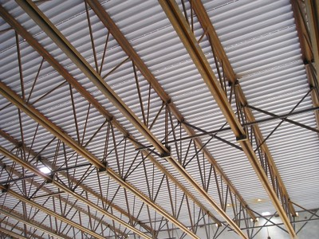

Composite steel deck and concrete slab [RME3]
Reinforced concrete cast onto steel decking, supported by beams or load bearing walls. They are sometimes overlaid with light-weight roofing. This system is similar to the floor system called Composite Steel Deck and Concrete Slab.

Composite steel deck and concrete slab supported by steel trusses, Canada (S. Brzev)

Steel trusses (Open Web Steel Joists) supported by precast concrete tilt-up walls, Canada (S. Brzev)